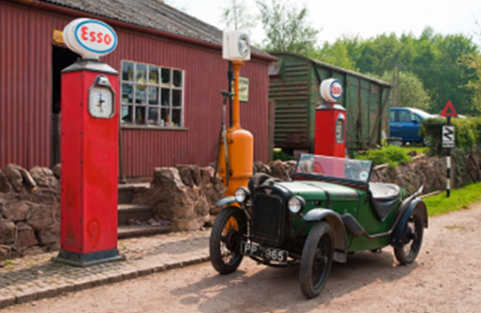

TMC Annual Rally 2025
Stonehurst Farm, Mountsorrel, Leics, LE12 7AA — 10 AM onwards, Sunday 27th July
· 8th June 2024
Stonehurst is a working farm, with plenty to see: Farm Park where you can meet the animals, tea room, and a play area for children. Also, there is a fantastic little motor museum, complete with period petrol pumps!
Owner Tom has set aside parking in the paddock for us. It should be a lovely venue for us, and a fantastic day out (with plenty to entertain all the family).
Entry (with Mayflower or other classic): £15/car (includes full entry to the site and all attractions, including the motor museum).
Regular entry:
- Adults — £9.50.
- Senior citizens — £8.50.
- Children — £8.50.
Let’s make it another bumper turnout of Mayflowers!